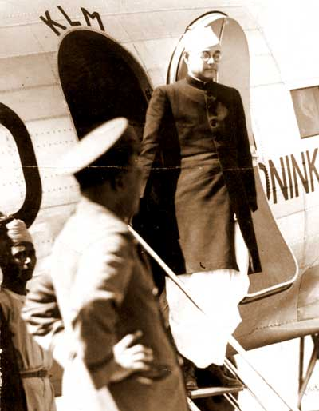
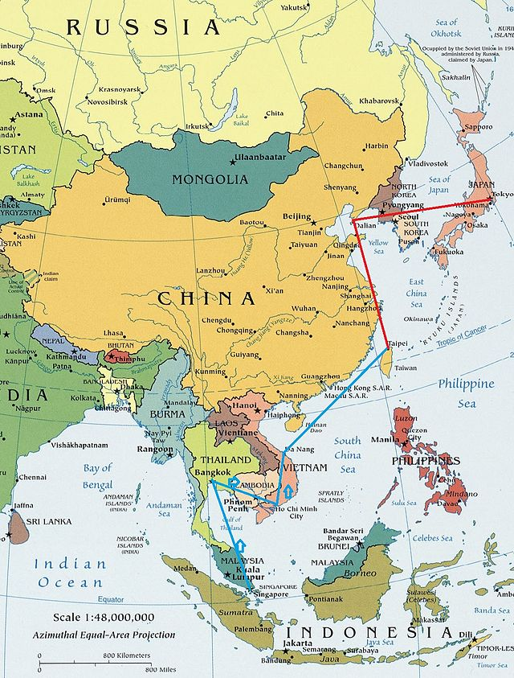
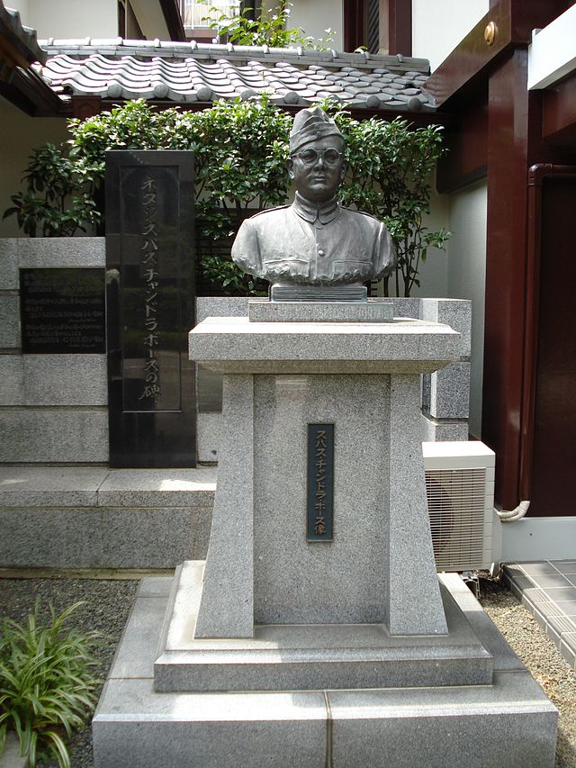

TRIBUTE TO OUR NATIONAL HERO: Netaji Subhash Chandra Bose
"Death Speculation Of Netaji Subhash Chandra Bose and His Famous Quotes"
In the consensus of scholarly opinion, Subhas Chandra Bose's death occurred
from third-degree burns on 18 August 1945 after his overloaded Japanese plane crashed in Japanese-ruled Formosa (now Taiwan).
On 14 September a memorial service was held for Bose in Tokyo and a few days later the ashes were turned over to the priest
of the Renkōji Temple of Nichiren Buddhism in Tokyo.
However, many among his supporters, especially in Bengal, refused at the time
and have refused since, to believe either the fact or the circumstances of his death. Conspiracy theories appeared within hours of
his death and have thereafter had a long shelf life, keeping alive various martial myths about Bose.
Regarding his disappearance,
the government had set up a number of committees to investigate the case and come out with the truth.
S C Bose's most famous slogans/quotes are "Give me blood and I will give you freedom", Dilli Chalo ("On to Delhi)!"
This was the call he used to give to the INA army to encourage them.
"Jai Hind", or, "Glory to India!" was another slogan used by him
and later adopted by the Government of India and the Indian Armed Forces.
Another slogan coined by him was "Ittefaq, Etemad, Qurbani" (Urdu for "Unity, Agreement, Sacrifice").
INA also used the slogan "Inquilab Zindabad", which was coined by Maulana Hasrat Mohani.
In July 1944, in a speech broadcast by the Azad Hind Radio from Singapore, Bose addressed Mahatma Gandhi as the "Father of the Nation".


